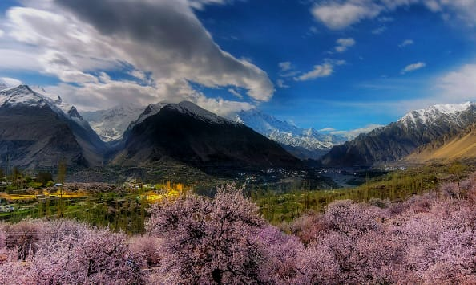

01
GILGIT-BALTISTAN
HUNZA
Spring transforms Hunza into a colorful paradise. Apricot and cherry blossoms bring the valley to life while the surrounding mountains create a spectacular backdrop.
WHY GO IN SPRING?
Perfect for photography, sightseeing, peaceful walks and experiencing the famous blossom season.